My Solutions to Exercises in "ggplot2"
Table of Contents
- 1. Chapter 2 – First Steps
- 2. Chapter 3 – Individual geoms
- 3. Chapter 4 – Collective Geoms
- 4. Chapter 5 – Statistical Summaries
- 5. Chapter 10 – Position Scales and axes
- 6. Chapter 11 – Colour Scales and legends
- 7. Chapter 14 – Build a plot layer by layer
- 8. Chapter 15 – Scales and guides
- 9. Chapter 17 – Faceting
- 10. Chapter 18 – Themes
-- org-confirm-babel-evaluate: nil --
The following are my solutions to the on-line version of the work-in-progress 3rd edition of ggplot2: elegant graphics for data analysis by Hadley Wickham, Danielle Navarro and Thomas Lin Pedersen, as of about March 2021. The on-line site is https://ggplot2-book.org/
This document is an Emacs org-mode document with R code sections
exported to HTML with F. Niessen's readtheorg style. In
addition to learning the Grammar of Graphics and ggplot2 by
working the exercises, it is also an exercise in creating and
exporting a document in org-mode that mixes both code and explanation.
This is my entry into literate programming and reproducible
research through the Emacs, Orgmode, and Org Babel with R ecosystem.
This document only covers most of the exercises up to Chapter 18, since I don't have the understanding of functional programming in the later section of Chapter 19 and beyond, and not much need (yet) for the advanced methods.
1 Chapter 2 – First Steps
library(ggplot2) options(crayon.enabled = FALSE) # see https://github.com/tidyverse/tibble/issues/395
1.1 2.2.1 Exercises
- List five functions that you could use to get more information about the mpg dataset.
head(mpg) tail(mpg) str(mpg) nrow(mpg) ncol(mpg)
- How can you find out what other datasets are included with ggplot2?
data(package="ggplot2")
Apart from the US, most countries use fuel consumption (fuel consumed over fixed distance) rather than fuel economy (distance traveled with fixed amount of fuel). How could you convert cty and hwy into the European standard of l/100km?
(62.1371192237 * mi/100 km)*(l/ 0.264172052358 gal)/mpg = ( 16.4148903129/mpg)* (l/100 km)
library("tidyverse")
mutate(mpg, cty_consump = 16.4148903129/cty, hwy_consump = 16.4148903129/hwy)
- Which manufacturer has the most models in this dataset? Which model has the most variations? Does your answer change if you remove the redundant specification of drive train (e.g. “pathfinder 4wd”, “a4 quattro”) from the model name?
mpg %>% group_by(manufacturer) %>% summarize(count=n())
Dodge has most models
1.2 2.3.1 Exercises
- How would you describe the relationship between cty and hwy? Do you have any concerns about drawing conclusions from that plot?
ggplot(mpg, aes(cty, hwy)) + geom_point()
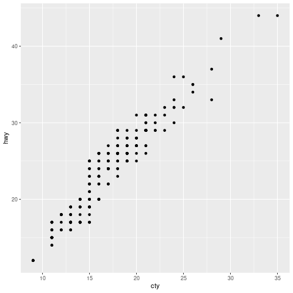
There is a strong positive correlation between the two quantities. But the data points seem to be regularly spaced, so it appears that the data has been rounded to a specific degree. Looking at the data, I see that all values are integers, so it is clear why the scatter plot is so regular. It also means that some points could be doubled or even tripled or more.
- What does
ggplot(mpg, aes(model, manufacturer)) + geom_point()show? Is it useful? How could you modify the data to make it more informative?
ggplot(mpg, aes(model, manufacturer)) + geom_point()
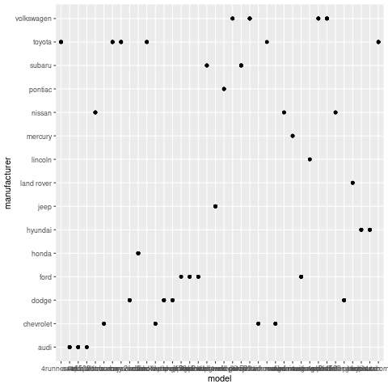
This does not give much good information. It's just an array of alphabetized model names, versus who the manufacturer is. It would be improved with better labeling at the bottom, so it doesn't overwrite, needs rotated model names.
- Describe the data, aesthetic mappings and layers used for each of the following plots. You’ll need to guess a little because you haven’t seen all the datasets and functions yet, but use your common sense! See if you can predict what the plot will look like before running the code.
ggplot(mpg, aes(cty, hwy)) + geom_point()
Scatter Plot
ggplot(diamonds, aes(carat, price)) + geom_point()
Messy scatter plot
ggplot(economics, aes(date, unemploy)) + geom_line()
Time series line
ggplot(mpg, aes(cty)) + geom_histogram()
Count of number of models with given city mileage per gallon.
1.3 2.4.1 Exercises
- Experiment with the colour, shape and size aesthetics. What happens when you map them to continuous values? What about categorical values? What happens when you use more than one aesthetic in a plot?
ggplot(mpg, aes(displ, cty, colour = displ)) + geom_point()
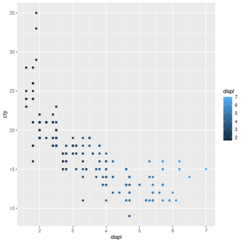
The color scale is not broad enough, from blue to dark blue or black, so it is hard to distinguish any trends.
ggplot(mpg, aes(displ, cty, size = displ)) + geom_point()
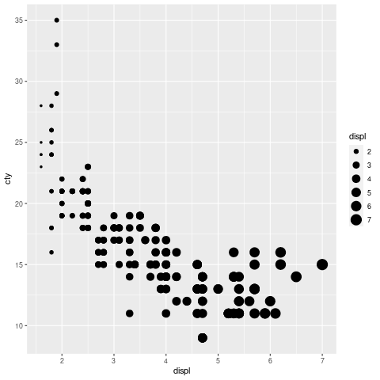
ggplot(mpg, aes(displ, cty, shape = displ)) + geom_point()

Error: A continuous variable can not be mapped to shape
The size scale is not broad enough so it is hard to distinguish any trends. The lack of color does not help either.
- What happens if you map a continuous variable to shape? Why? What happens if you map trans to shape? Why?
Mapping a continuous variable to a shape gives an error.
Error: A continuous variable can not be mapped to shape
ggplot(mpg, aes(displ, cty, shape = displ)) + geom_point()

Too many categories, and the shapes are hard to distinguish here.
- How is drive train related to fuel economy? How is drive train related to engine size and class?
ggplot(mpg, aes(displ, cty, color = drv)) + geom_point()
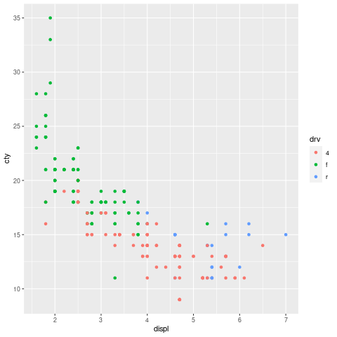
Dive train is related to fuel economy, "f" or front wheel drive is generally best fuel economy, 4-wheel drive and rear wheel drive are comparable in fuel economy, with 4-wheel drive having a wider range of values.
1.4 2.5.1 Exercises
- What happens if you try to facet by a continuous variable like hwy? What about cyl? What’s the key difference?
ggplot(mpg, aes(displ, cty, color = drv)) + geom_point() + facet_wrap(~hwy)
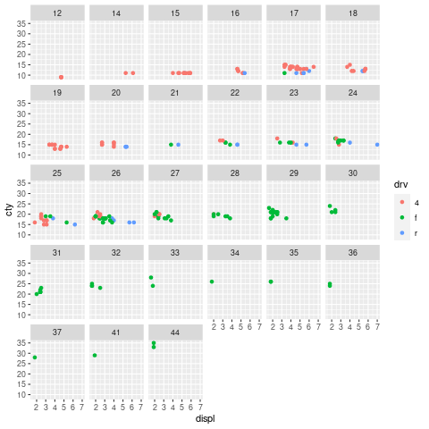
Get many facets here each with few points. Although hwy is a continuous value, it
appears here as integer values, so facet_wrap can actually handle
it.
ggplot(mpg, aes(displ, cty, color = drv)) + geom_point() + facet_wrap(~cyl)
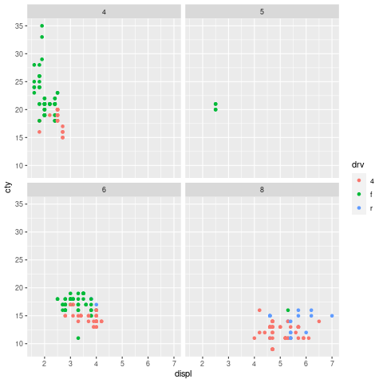
The key difference seems to be the number of values of the faceting variable.
- Use faceting to explore the 3-way relationship between fuel economy, engine size, and number of cylinders. How does faceting by number of cylinders change your assessment of the relationship between engine size and fuel economy?
ggplot(mpg, aes(displ, cty, color = drv)) + geom_point() + facet_wrap(~cyl)
Across the factors of cylinders, fuel economy seems to depend on cylinders somewhat. Because of the bunching of the points for 6 and 8 cylinders, it appears that displacement does not greatly affect the fuel economy for those classes. However for 4 cylinders, displacement does not affect economy much, but some other factor does affect
- Read the documentation for
facet_wrap(). What arguments can you use to control how many rows and columns appear in the output?
nrow, ncol: Number of rows and columns.
- What does the scales argument to
facet_wrap()do? When might you use it?
scales: Should scales be fixed (‘"fixed"’, the default), free (‘"free"’), or free in one dimension (‘"
free_x"’, ‘"free_y"’)?
1.5 2.6.6 Exercises
- One challenge with ggplot(mpg, aes(class, hwy)) + geomboxplot() is that the ordering of class is alphabetical, which is not terribly useful. How could you change the factor levels to be more informative?
Probably the most automatic is to use the forcats library function
fact_reorder(). See examples at
https://www.r-graph-gallery.com/267-reorder-a-variable-in-ggplot2.html
A little more hands-on is to use mutate to create a new variable or
reorder an existing one. Again, see examples at
https://www.r-graph-gallery.com/267-reorder-a-variable-in-ggplot2.html
- Rather than reordering the factor by hand, you can do it
automatically based on the data:
ggplot(mpg, aes(reorder(class, hwy), hwy)) + geom_boxplot(). What doesreorder()do? Read the documentation.
From the documentation:
‘reorder’ is a generic function. The ‘"default"’ method treats its first argument as a categorical variable, and reorders its levels based on the values of a second variable, usually numeric. reorder is in the stats library
- Explore the distribution of the carat variable in the diamonds dataset. What binwidth reveals the most interesting patterns?
This exercise is basically repeated in Exercise 5.4.1.1. The answer there is: The default binwidth seems to give too coarse a distribution but there may be something interesting happening near 1 and 2
A binwidth= 0.1 starts to reveal a mix of decaying exponential distributions at 1/2, 1, 2 maybe 3
Finally, with a binwidth of 0.005, some clear trends appear with a mix of decaying exponentials appearing at about multiples of 0.25 carats.
ggplot(diamonds, aes(carat) ) +
geom_histogram(binwidth= 0.005) +
xlim(0,2.5)
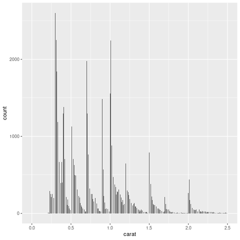
- Explore the distribution of the price variable in the diamonds data. How does the distribution vary by cut?
This exercise is basically repeated in Exercise 16.7.1. The answer there is: The default binwidth seems to give too coarse a distribution but there may be something interesting happening near 1 and 2
ggplot(diamonds, aes(carat, price)) + geom_point() + facet_wrap( ~cut)
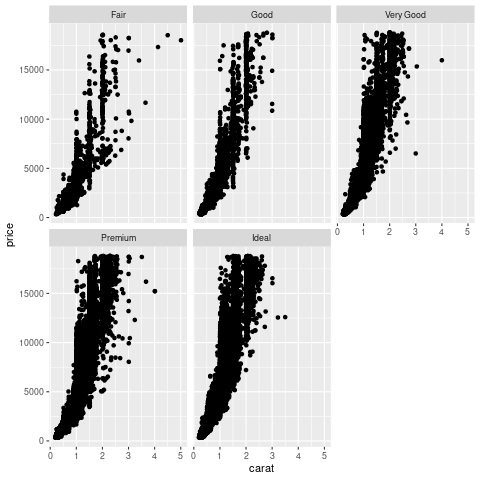
- You now know (at least) three ways to compare the distributions
of subgroups:
geom_violin(),geom_freqpoly()and the colour aesthetic, orgeom_histogram()and faceting. What are the strengths and weaknesses of each approach? What other approaches could you try? geom_violin(): Strength: Ability to compare more than a few
distributions. Weakness: Hard to distinguish details on the small plots.
geom_freqpoly(): Strength: Matches the common visualization of a
distribution as a frequency on the vertical versus the variable on the horizontal axis. Weakness: The overlapping distributions sometimes hide each other and obscure details.
geom_histogram(): Strength: Details are revealed for each
subgroup. Weakness: hard to compare one subgroup to another.
- Read the documentation for
geom_bar(). What does the weight aesthetic do?
There are two types of bar charts: geom_bar() and
geom_col(). geom_bar() makes the height of the bar proportional to the
number of cases in each group (or if the weight aesthetic is supplied,
the sum of the weights).
- Using the techniques already discussed in this chapter, come up with three ways to visualise a 2d categorical distribution. Try them out by visualising the distribution of model and manufacturer, trans and class, and cyl and trans.
The following is a start for trans and class:
ggplot( mpg, aes(x = trans)) + geom_bar(aes(fill=class))
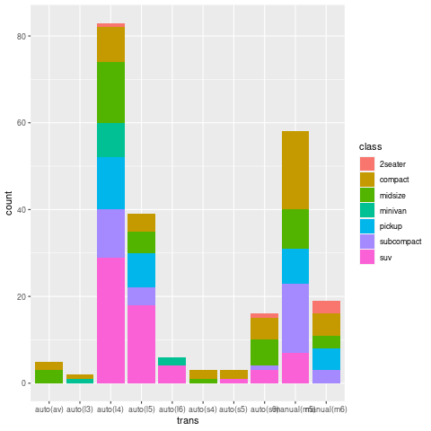
2 Chapter 3 – Individual geoms
library(ggplot2) options(crayon.enabled = FALSE) # see https://github.com/tidyverse/tibble/issues/395
2.1 Section 3.1.1 Exercises
What geoms would you use to draw each of the following named plots?
- Scatterplot –
geom_point() - Line chart –
geom_line() - Histogram –
geom_histogram() - Bar chart –
geom_bar() - Pie chart – The function
coord_polar()is used to produce a
pie chart, which is just a stacked bar chart in polar coordinates.
- Scatterplot –
An example would be
ggplot(df, aes(x="", y=value, fill=group))+
geom_bar(width = 1, stat = "identity")
+ coord_polar("y", start=0)
- What’s the difference between
geom_path()andgeom_polygon()? What’s the difference betweengeom_path()andgeom_line()?
Polygons are very similar to paths (as drawn by geom_path()) except
that the start and end points are connected and the inside is coloured
by ‘fill’. The ‘group’ aesthetic determines which cases are connected
together into a polygon. From R 3.6 and onwards it is possible to draw
polygons with holes by providing a subgroup aesthetic that
differentiates the outer ring points from those describing holes in
the polygon.
- What low-level geoms are used to draw
geom_smooth()? What aboutgeom_boxplot()andgeom_violin()?
Probably each uses geom_line() but I don't find documentation of this.
I have to look into the function code to find out.
Scanning the code for geom_violin(), at
https://github.com/tidyverse/ggplot2/blob/master/R/geom-violin.r
I find some references to drawing paths and polygons, but not with the
higher level geoms, more like more primitive drawing tools.
Looking closer the source, at line 177, I find draw_panel().
Following up, in the vignette "Extending ggplot2",
https://cran.r-project.org/web/packages/ggplot2/vignettes/extending-ggplot2.html
I find
draw_panel()is where the magic happens. This function takes three arguments and returns a grid grob. It is called once for each panel.
A "grob" is a grid graphical object in R.
3 Chapter 4 – Collective Geoms
library(ggplot2) options(crayon.enabled = FALSE) # see https://github.com/tidyverse/tibble/issues/395
3.1 4.5 Exercises
Draw a boxplot of hwy for each value of cyl, without turning cyl into a factor. What extra aesthetic do you need to set?
ggplot(mpg, aes(cyl, hwy, group=cyl)) + geom_boxplot()
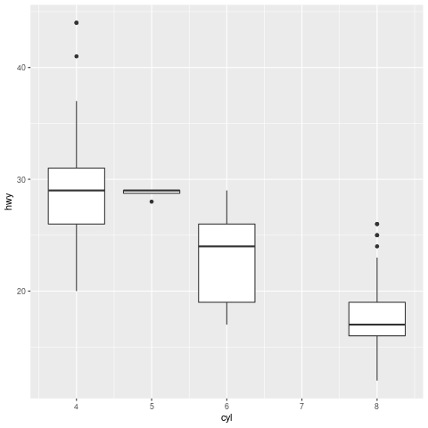
Modify the following plot so that you get one boxplot per integer value of displ.
ggplot(mpg, aes(displ, cty)) + geom_boxplot()
Amazingly, the following, which was a guess, worked!
ggplot(mpg, aes(displ, cty, group = round(displ))) + geom_boxplot()
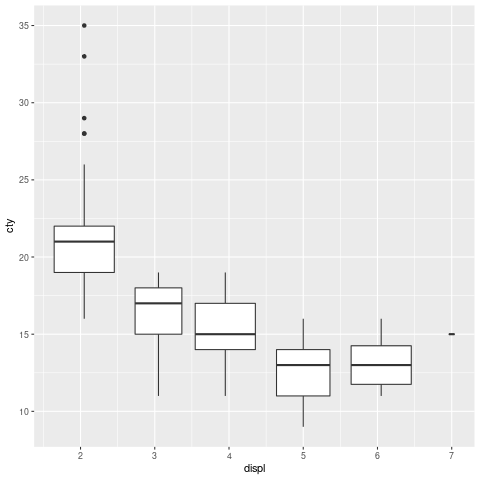
When illustrating the difference between mapping continuous and discrete colours to a line, the discrete example needed
aes(group = 1). Why? What happens if that is omitted? What’s the difference betweenaes(group = 1)andaes(group = 2)? Why?If
group = 1is omitted from thegeom_line(), then get the following error message:
geom_path: Each group consists of only one observation. Do you need to adjust the group aesthetic?
There is no difference that I can see between aes(group = 1) and
aes(group = 2). Even if I try aes(group=5) the graphic is the same.
I am not sure why this should be.
How many bars are in each of the following plots?
ggplot(mpg, aes(drv)) + geom_bar()3 bars, one each for "4", "f", "r".
ggplot(mpg, aes(drv, fill = hwy, group = hwy)) + geom_bar()
3 bars, one each for "4", "f", "r", but now are shaded colour by hwy.
library(dplyr) mpg2 <- mpg %>% arrange(hwy) %>% mutate(id = seq_along(hwy)) ggplot(mpg2, aes(drv, fill = hwy, group = id)) + geom_bar()(Hint: try adding an outline around each bar with colour = "white")
Install the babynames package. It contains data about the popularity of babynames in the US. Run the following code and fix the resulting graph. Why does this graph make me unhappy?
library(babynames) hadley <- dplyr::filter(babynames, name == "Hadley") ggplot(hadley, aes(year, n)) + geom_point()
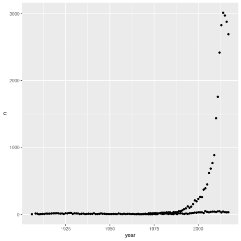
The following is better:
ggplot(hadley, aes(year, n, color=sex)) + geom_point()
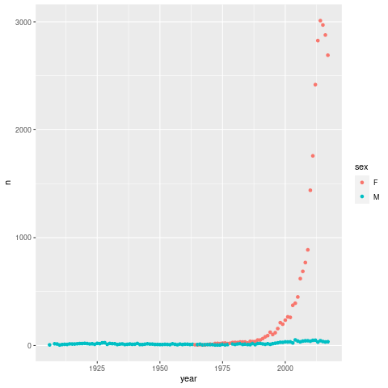
In either case, "Hadley" is clearly a popular female name in the 21st Century.
4 Chapter 5 – Statistical Summaries
library(ggplot2) options(crayon.enabled = FALSE) # see https://github.com/tidyverse/tibble/issues/395
4.1 5.4.1 Exercises
What binwidth tells you the most interesting story about the distribution of carat?
The default binwidth seems to give too coarse a distribution but there may be something interesting happening near 1 and 2
A
binwidth= 0.1starts to reveal a mix of decaying exponential distributions at 1/2, 1, 2 maybe 3Finally, with a binwidth of 0.005, some clear trends appear with a mix of decaying exponentials appearing at about multiples of 0.25 carats.
ggplot(diamonds, aes(carat) ) + geom_histogram(binwidth= 0.005) + xlim(0,2.5)Draw a histogram of price. What interesting patterns do you see?
Roughly speaking an exponential type drop as price increases
ggplot( diamonds, aes(price) ) + geom_histogram(binwidth=200)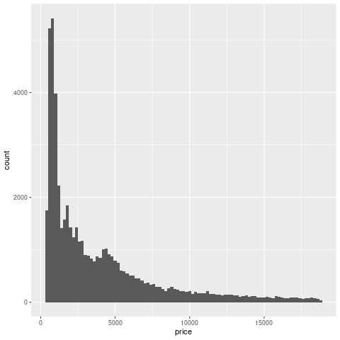
How does the distribution of price vary with clarity?
Long tails on the distribution, more or less similar for all values of clarity.
ggplot(diamonds, aes(factor(clarity), price) ) + geom_violin()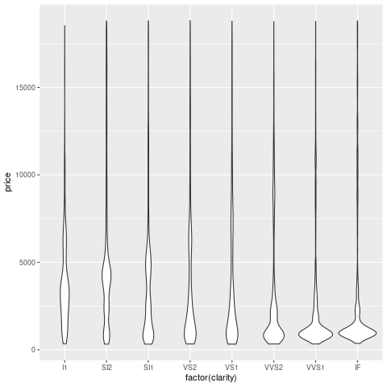
- Overlay a frequency polygon and density plot of depth. What
computed variable do you need to map to y to make the two plots
comparable? (You can either modify
geom_freqpoly()orgeom_density().)
No solution.
5 Chapter 10 – Position Scales and axes
library(ggplot2) options(crayon.enabled = FALSE) # see https://github.com/tidyverse/tibble/issues/395
5.1 10.1.4 Exercises
- The following code creates two plots of the mpg dataset. Modify the code so that the legend and axes match, without using faceting!
fwd <- subset(mpg, drv == "f") rwd <- subset(mpg, drv == "r") ggplot(fwd, aes(displ, hwy, colour = class)) + geom_point() ggplot(rwd, aes(displ, hwy, colour = class)) + geom_point()
fwd <- subset(mpg, drv == "f")
rwd <- subset(mpg, drv == "r")
ggplot(fwd, aes(displ, hwy, colour = class)) +
geom_point() +
xlim(2,7) + ylim(15, 45) +
scale_color_discrete(limits =
c("compact", "midsize", "minivan", "subcompact", "2seater", "suv"))
ggplot(rwd, aes(displ, hwy, colour = class)) +
geom_point() +
xlim(2,7) + ylim(15, 45) +
scale_color_discrete(limits =
c("compact", "midsize", "minivan", "subcompact", "2seater", "suv"))
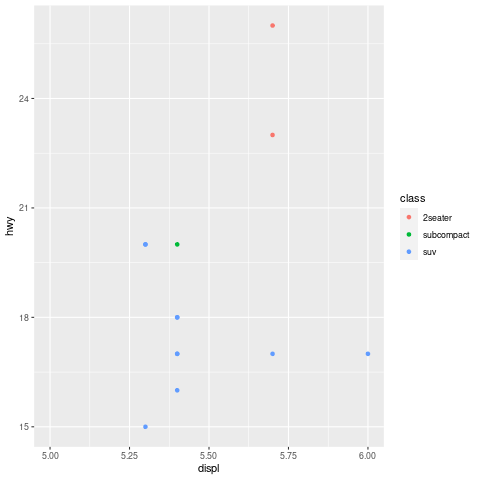
What happens if you add two
xlim()calls to the same plot? Why?ggplot(rwd, aes(displ, hwy, colour = class)) + geom_point() + xlim(2,7) + xlim(5, 6)Get the following error message:
Scale for 'x' is already present. Adding another scale for 'x', which will replace the existing scale. Warning message: Removed 12 rows containing missing values '(geompoint)'.
The second scale is used, replaces the first scale.
What does
scale_x_continuous(limits = c(NA, NA))do?ggplot(fwd, aes(displ, hwy, colour = class)) + geom_point() + xlim(NA, NA)gives the following error message (which I don't find very helpful!)
Error in UseMethod("limits") : no applicable method for 'limits' applied to an object of class "logical"
However the following works!
ggplot(fwd, aes(displ, hwy, colour = class)) +
geom_point() +
xlim(NA, 7)
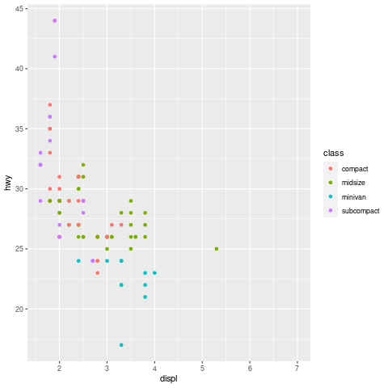
What does
expand_limits()do and how does it work? Read the source code.Sometimes you may want to ensure limits include a single value, for all panels or all plots. This function
expand_limit()is a thin wrapper aroundgeom_blank()that makes it easy to add such values. This function seems to me to do essentially the same this asxlim()andylim(). This function can be used to quickly set the intercept of x and y axes at (0,0) and to expand the limits of x and y axes.The source code is:
{ data <- list(...) data_dfs <- vapply(data, is.data.frame, logical(1)) data <- do.call(c, c(list(data[!data_dfs]), data[data_dfs])) n_rows <- max(vapply(data, length, integer(1))) data <- lapply(data, rep, length.out = n_rows) data <- new_data_frame(data) geom_blank(aes_all(names(data)), data, inherit.aes = FALSE) }It's not clear to me what all this does, but it looks like the function increases the data and adds a new invisible or blank geom to the plot.
5.2 10.1.8 Exercises
Recreate the following graphic: Adjust the y axis label so that the parentheses are the right size.
The following does it, but without the stacked fraction. It is not clear how to format this, but the following might help. https://www.benjaminackerman.com/post/2019-03-08-equation_labels/ and https://astrostatistics.psu.edu/su07/R/html/grDevices/html/plotmath.html See also https://stackoverflow.com/questions/40994357/notation-for-fractions-divides-by-or-over-in-r-and-ggplot2 It looks like I need
expression(), see question 3 below.
base <- ggplot(mpg, aes(displ, hwy)) +
geom_point()
base +
xlab("Displacement") +
ylab("Highway (miles/gallon)")
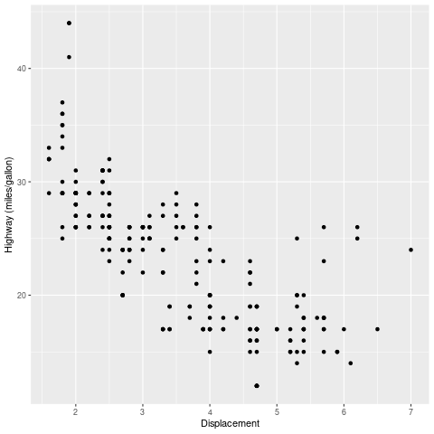
List the three different types of object you can supply to the breaks argument. How do breaks and labels differ?
From the online documentation at https://ggplot2.tidyverse.org/reference/scale_continuous.html 'breaks' can be set to one of:
- NULL for no breaks
waiver()for the default breaks computed by the transformation object- A numeric vector of positions
- A function that takes the limits as input and returns breaks as
output (e.g., a function returned by
scales::extended_breaks())
'labels' can be set to one of:
- NULL for no labels
waiver()for the default labels computed by the transformation object- A character vector giving labels (must be same length as breaks)
- A function that takes the breaks as input and returns labels as output
The overall difference seems to be that breaks are numeric and labels are characters.
What label function allows you to create mathematical expressions? What label function converts 1 to 1st, 2 to 2nd, and so on?
From online documentation https://ggplot2.tidyverse.org/reference/label_bquote.html
label_bquote()offers a flexible way of labeling facet rows or columns with plotmath expressions. Backquoted variables will be replaced with their value in the facet.But this seems to be incomplete since the only examples appear to be single Greek letters, not what I consider to be mathematical expressions.
The
expression()function seems to be a better alternative, see https://stackoverflow.com/questions/40994357/notation-for-fractions-divides-by-or-over-in-r-and-ggplot2To convert 1 to 1st, 2 to 2nd, etc, looks like I want to use the special package toOrdinal, see https://rdrr.io/cran/toOrdinal/man/toOrdinal.html and https://cran.r-project.org/web/packages/toOrdinal/toOrdinal.pdf
6 Chapter 11 – Colour Scales and legends
library(ggplot2) options(crayon.enabled = FALSE) # see https://github.com/tidyverse/tibble/issues/395
6.1 11.3.4 Exercises
- Recreate the following plot.
Something like one of the following should work, but none do
p <- ggplot(mpg, aes(displ,hwy, color=drv)) + geom_point()
p
p + scale_fill_discrete(labels=c("4wd", "fwd", "rwd"))
p + scale_fill_manual(name="Drive", labels=c("4wd", "fwd", "rwd"))
Here's the way, with even a small additional improvement.
p <- ggplot(mpg, aes(displ,hwy, color=drv)) + geom_point()
p + scale_color_discrete(name="Drive", labels=c("4wd", "fwd", "rwd"))
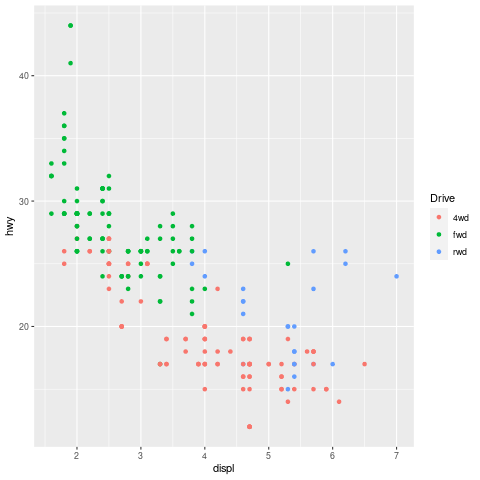
6.2 11.7.5 Exercises
- How do you make legends appear to the left of the plot?
ggplot(mpg, aes(displ,hwy, color=drv)) + geom_point() + theme(legend.position="left")
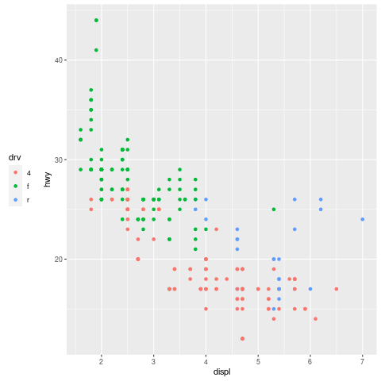
- What’s gone wrong with this plot? How could you fix it?
ggplot(mpg, aes(displ, hwy)) +
geom_point(aes(colour = drv, shape = drv)) +
scale_colour_discrete("Drive train")
What's wrong is that the points have two aesthetics and two legends.
The fix is to combine the color and the shape into one legend.
The way to do it is to omit the scale_color_discrete()
ggplot(mpg, aes(displ,hwy)) + geom_point(aes(color=drv,shape=drv))
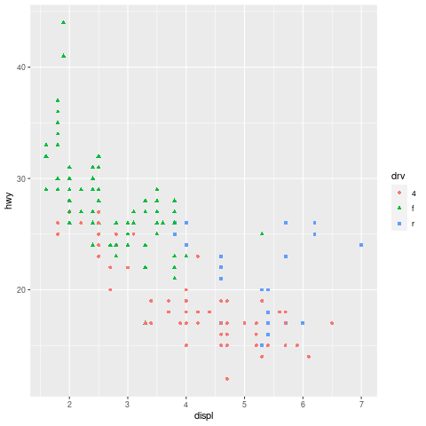
Can you recreate the code for this plot?
`geom_smooth()` using formula 'y ~ x'ggplot(mpg, aes(displ,hwy, color=class)) + geom_point() + geom_smooth(method="lm", se=FALSE) + theme(legend.position="bottom")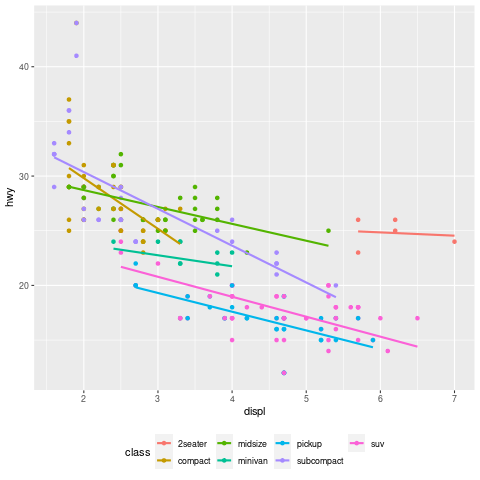
7 Chapter 14 – Build a plot layer by layer
library(ggplot2) options(crayon.enabled = FALSE) # see https://github.com/tidyverse/tibble/issues/395
7.1 14.3.1 Exercises
- The first two arguments to ggplot are data and mapping. The first two arguments to all layer functions are mapping and data. Why does the order of the arguments differ? (Hint: think about what you set most commonly.)
The following code uses dplyr to generate some summary statistics about each class of car.
library(dplyr) class <- mpg %>% group_by(class) %>% summarise(n = n(), hwy = mean(hwy))
2seater 5 24.8 compact 47 28.2978723404255 midsize 41 27.2926829268293 minivan 11 22.3636363636364 pickup 33 16.8787878787879 subcompact 35 28.1428571428571 suv 62 18.1290322580645 #> `summarise()` ungrouping output (override with `.groups` argument)
Use the data to recreate this plot:
ggplot(mpg, aes(class, hwy)) +
geom_point() +
geom_jitter(width=0.2) +
geom_point(data=class, color="red", size=3) +
geom_text(data=class, aes(class, 10, label=paste0("n=", n)))
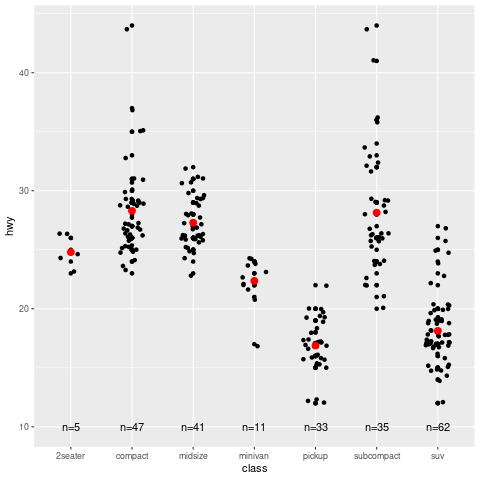
Couple of notes:
- It looks like a different size of black point may have been specified in the plot in the exercise.
- The red dots in the exercise may have been specified larger in the plot for the exercise.
- The amount of jitter may have been smaller in the plot for the exercise, since I appear to have more discrete points while some overlap or overplotting may appear in the exercise.
7.2 14.4.3 Exercises
Simplify the following plot specifications:
a.
ggplot(mpg) +
geom_point(aes(mpg$displ, mpg$hwy))
Note: The given commands give the following warnings:
1: Use of `mpg$displ` is discouraged. Use `displ` instead. 2: Use of `mpg$hwy` is discouraged. Use `hwy` instead.
The following is the simplification:
ggplot(mpg, aes(displ, hwy)) +
geom_point()
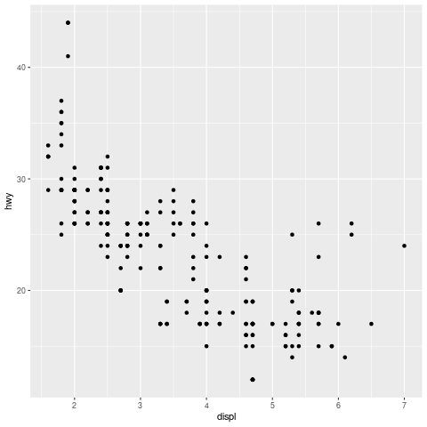
This gives the same plot as the unsimplified.
b.
ggplot() + geom_point(mapping = aes(y = hwy, x = cty), data = mpg) + geom_smooth(data = mpg, mapping = aes(cty, hwy))
ggplot(mpg, aes(cty,hwy)) + geom_point() + geom_smooth()
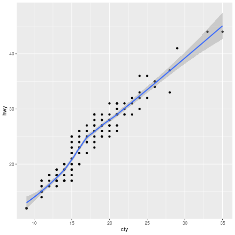
This gives the same plot as the unsimplified.
c.
ggplot(diamonds, aes(carat, price)) +
geom_point(aes(log(brainwt), log(bodywt)), data = msleep)
The unsimplified commands above plot the msleep data on log scales, but with the diamonds carat and price labels on the axes.
ggplot(msleep, aes(log(brainwt), log(bodywt))) +
geom_point()
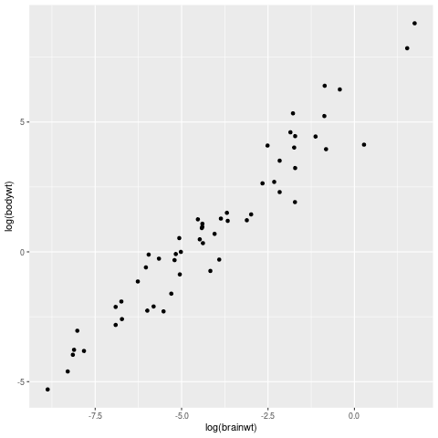
- What does the following code do? Does it work? Does it make sense? Why/why not?
ggplot(mpg) + geom_point(aes(class, cty)) + geom_boxplot(aes(trans, hwy))
It overplots the class versus cty point plot with the trans versus hwy boxplot. The result does not make sense, it is confusing.
- What happens if you try to use a continuous variable on the x axis in one layer, and a categorical variable in another layer? What happens if you do it in the opposite order?
ggplot(mpg) + geom_point(aes(cty, hwy)) + geom_boxplot(aes(trans, hwy))
Error message: Error: Discrete value supplied to continuous scale
ggplot(mpg) + geom_boxplot(aes(trans, hwy)) + geom_point(aes(cty, hwy))
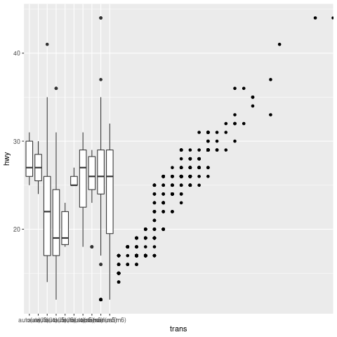
It plots but the plot is a mess, and the axes are cramped, confused, and messy.
7.3 14.5.1 Exercises
- Download and print out the ggplot2 cheatsheet from http://www.rstudio.com/resources/cheatsheets/ so you have a handy visual reference for all the geoms.
Look at the documentation for the graphical primitive geoms. Which aesthetics do they use? How can you summarise them in a compact form?
Primitive x y label ymin ymax alpha angle color family fontface fill group shape width size linetype subgroup stroke xmin xmax geom_pointY Y Y Y Y Y Y Y Y geom_pathY Y Y Y Y Y Y geom_ribbon1 1 Y Y Y Y Y Y Y Y geom_segmentY Y Y Y Y Y Y geom_rectY Y Y Y Y Y Y Y Y geom_polygonY Y Y Y Y Y Y Y geom_textY Y Y Y Y Y Y Y Y Y Well, this is not as compact as I expected, since there are more aesthetics than I expected.
What’s the best way to master an unfamiliar geom? List three resources to help you get started.
This is a pretty facile answer:
- Start with the built-in help file. Identify the default values, in particular the aesthetics, stat, position, and scale associated with the geom.
- Look at the online documentation from the tidyverse, since it has more of the same.
- Try some of the examples, especially examples which use the mpg data set since it is so familiar, and used so often for illustrations.
- Look at the GGPlot2 Cookbook.
- Look at the R Graph gallery.
- For each of the plots below, identify the geom used to draw it.
a. geom_violin()
b. geom_point() with size as an aesthetic
c. geom_hex()
d. geom_point() + geom_jitter()
e. geom_line() apparently also with fill
f. geom_path()
- For each of the following problems, suggest a useful geom:
a. Display how a variable has changed over time.
I would use geom_line(), possibly geom_path()
b. Show the detailed distribution of a single variable.
I would use geom_density()
c. Focus attention on the overall trend in a large dataset.
I would use geom_smooth here
d. Draw a map.
geom_polygon, but you need the shapefile for the map.
e. Label outlying points.
geom_text after filtering to identify and isolate the outliers.
7.4 14.6.2 Exercises
- The code below creates a similar dataset to
stat_smooth(). Use the appropriate geoms to mimic the defaultgeom_smooth()display.
mod <- loess(hwy ~ displ, data = mpg) smoothed <- data.frame(displ = seq(1.6, 7, length = 50)) pred <- predict(mod, newdata = smoothed, se = TRUE) smoothed$hwy <- pred$fit smoothed$hwy_lwr <- pred$fit - 1.96 * pred$se.fit smoothed$hwy_upr <- pred$fit + 1.96 * pred$se.fit
mod <- loess(hwy ~ displ, data = mpg)
smoothed <- data.frame(displ = seq(1.6, 7, length = 50))
pred <- predict(mod, newdata = smoothed, se = TRUE)
smoothed$hwy <- pred$fit
smoothed$hwy_lwr <- pred$fit - 1.96 * pred$se.fit
smoothed$hwy_upr <- pred$fit + 1.96 * pred$se.fit
ggplot(mpg, aes(displ, hwy)) + geom_smooth() +
geom_smooth(aes(displ, hwy_upr), color="green", data=smoothed) +
geom_smooth(aes(displ, hwy_lwr), color="green", data=smoothed)
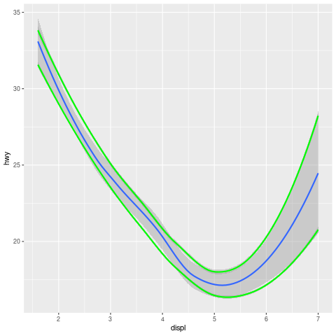
What stats were used to create the following plots?
a. This looks like
stat_ecdf()used with eithergeom_line()ggplot(mpg, aes(displ, hwy)) + geom_line(stat="ecdf")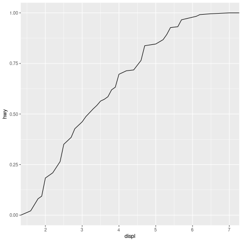
This is more stretched out than the scrunched up sample.
b. This looks like a quantile stat used with
geom_point().c. This looks like a function plot for the recentered and scaled normal density compared to the data density.
Read the help for
stat_sum()then usegeom_count()to create a plot that shows the proportion of cars that have each combination of drv and trans.TO DO
7.5 14.7.1 Exercises
When might you use
position_nudge()? Read the documentation.From the help file:
position_nudge()is generally useful for adjusting the position of items on discrete scales by a small amount. Nudging is built in togeom_text()because it's so useful for moving labels a small distance from what they're labelling.
df <- data.frame(
x = c(1,3,2,5),
y = c("a","c","d","c")
)
ggplot(df, aes(x, y)) +
geom_point() +
geom_text(aes(label = y), position = position_nudge(y = -0.1))
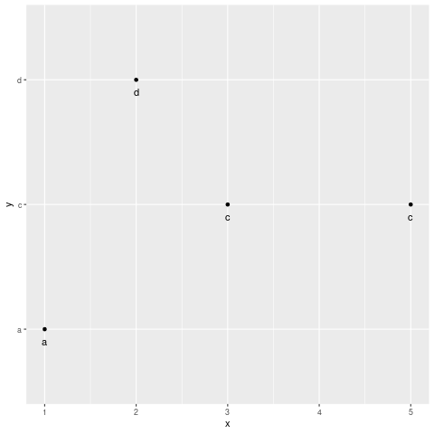
Many position adjustments can only be used with a few geoms. For example, you can’t stack boxplots or errors bars. Why not? What properties must a geom possess in order to be stackable? What properties must it possess to be dodgeable?
I would say that you can't you can’t stack boxplots or errors bars because they indicate a density or a distribution of values for a category. Stacking a distribution for more than one category doesn't make much sense.
Why might you use
geom_jitter()instead ofgeom_count()? What are the advantages and disadvantages of each technique?This is a variant of
geom_point()that counts the number of observations at each location, then maps the count to point area. It useful when you have discrete data and overplotting. I would want this when I want more precise information. On the other hand, usinggeom_jitter()gives a more impressionistic sense of the data.- When might you use a stacked area plot? What are the advantages and disadvantages compared to a line plot?
ggplot(diamonds, aes(color, fill = cut)) +
geom_bar(position = "identity", alpha = 1 / 2, colour = "grey50") +
xlab(NULL) + ylab(NULL) + theme(legend.position = "none")
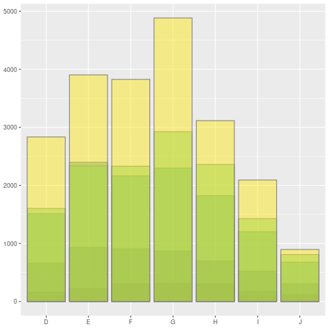
ggplot(diamonds, aes(color, colour = cut)) + geom_line(aes(group = cut), stat = "count") + xlab(NULL) + ylab(NULL) + theme(legend.position = "none")
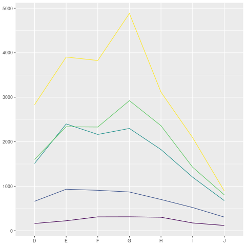
I think the stacked obscures a lot of information, even with the transparency. However the filled areas give an impression of the relative numbers better than the line plots, which seem to be meager on information, even though it is the same thing.
8 Chapter 15 – Scales and guides
library(ggplot2) options(crayon.enabled = FALSE) # see https://github.com/tidyverse/tibble/issues/395
8.1 15.1.1 Exercises
Simplify the following plot specifications to make them easier to understand.
a.
ggplot(mpg, aes(displ)) + scale_y_continuous("Highway mpg") + scale_x_continuous() + geom_point(aes(y = hwy))ggplot(mpg, aes(displ, hwy)) + geom_point() + scale_y_continuous("Highway mpg")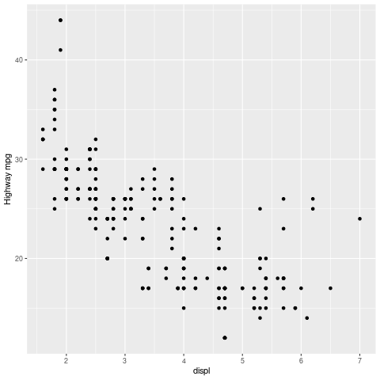
b.
ggplot(mpg, aes(y = displ, x = class)) + scale_y_continuous("Displacement (l)") + scale_x_discrete("Car type") + scale_x_discrete("Type of car") + scale_colour_discrete() + geom_point(aes(colour = drv)) + scale_colour_discrete("Drive\ntrain")ggplot(mpg, aes(x = class, y = displ, colour = drv)) + geom_point(aes()) + scale_x_discrete("Type of car") + scale_y_continuous("Displacement (l)") + scale_colour_discrete("Drive\ntrain")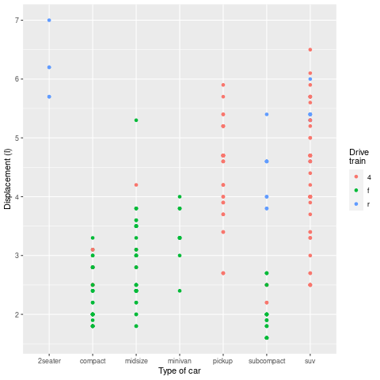
a. What happens if you pair a discrete variable with a continuous scale?
ggplot(mpg, aes(x = class, y = displ, colour = drv)) + geom_point(aes()) + scale_x_continuous("Type of car") + scale_y_continuous("Displacement (l)") + scale_colour_discrete("Drive\ntrain")You get: Error: Discrete value supplied to continuous scale
b. What happens if you pair a continuous variable with a discrete scale?
ggplot(mpg, aes(x = class, y = displ, colour = drv)) + geom_point(aes()) + scale_x_discrete("Type of car") + scale_y_discrete("Displacement (l)") + scale_colour_discrete("Drive\ntrain")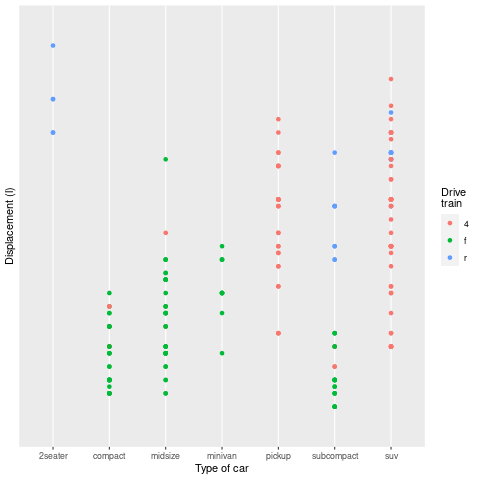
The plot comes put okay, but the continuous variable does not have any scale marks on the axis.
8.2 15.7 Exercises
What are the three most important arguments that apply to both axes and legends? What do they do? Compare and contrast their operation for axes vs. legends.
From section 15.3:
| Argument | Axis | Legend |
| name | Label | Title |
| breaks | Ticks & grid line | Key |
| labels | Tick label | Key label |
library(ggplot2) options(crayon.enabled = FALSE) # see https://github.com/tidyverse/tibble/issues/395
9 Chapter 17 – Faceting
9.1 17.7 Exercises
- Diamonds: display the distribution of price conditional on cut and carat. Try faceting by cut and grouping by carat. Try faceting by carat and grouping by cut. Which do you prefer?
ggplot(diamonds, aes(carat, price)) + geom_point() + facet_wrap( ~cut)
ggplot(diamonds, aes(cut, price )) + geom_point() + facet_wrap( ~carat)
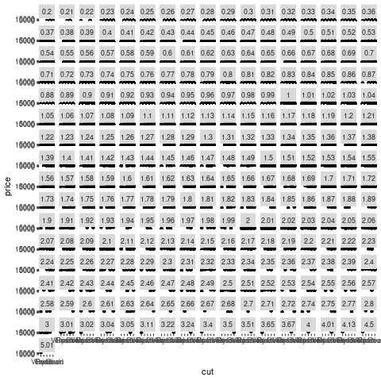
Obviously, the first, conditional on cut is far preferable. There are too many values of carat to make a sensible facetplot.
Diamonds: compare the relationship between price and carat for each colour. What makes it hard to compare the groups? Is grouping better or faceting? If you use faceting, what annotation might you add to make it easier to see the differences between panels?
ggplot(diamonds, aes(carat, price)) + geom_point() + geom_smooth(color="red") + facet_wrap( ~color)
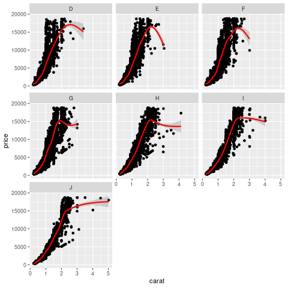
Based on the partial results from the smoothing, it might help to add the exponential rate for price increase.
Why is
facet_wrap()generally more useful thanfacet_grid()?facet_wrap()would seem to work well for categorical variables, which are common, whilefacet_grid()seems to be a appropriate for a variable with some kind of regular increase or decrease or relationship among values.- Recreate the following plot. It facets mpg2 by class, overlaying a smooth curve fit to the full dataset.
geom_smooth()using method = 'loess' and formula 'y ~ x'
mpg2 <- subset(mpg, cyl != 5 & drv %in% c("4", "f") & class != "2seater")
ggplot(mpg2, aes(displ, hwy)) +
geom_point() +
geom_smooth(se=FALSE) +
facet_wrap( ~class)
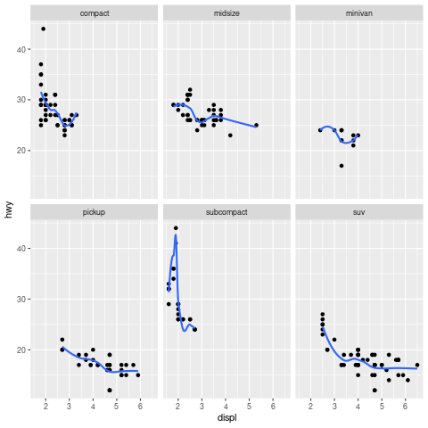
I don't get the smoothed curve to extend over the range of the displacement, and my smoothed curves seem to a lot of variation, not very smoothed. Must need to tweak a parameter.
library(ggplot2) options(crayon.enabled = FALSE) # see https://github.com/tidyverse/tibble/issues/395
10 Chapter 18 – Themes
10.1 18.2.1 Exercises
Try out all the themes in ggthemes. Which do you like the best?
For examples in use, see https://ggplot2.tidyverse.org/reference/ggtheme.html and https://yutannihilation.github.io/allYourFigureAreBelongToUs/ggthemes/
I haven't tried all the themes in ggthemes. Among the 8 default themes that come with ggplot2, I like
theme_linedraw()the best, since it seems to measure and indicate the data information most clearly, and it resembles my understanding of classic graphs best.What aspects of the default theme do you like? What don’t you like? What would you change?
I like that colors "pop" against the grey background. The lack of axes conform to the Tufte admonition to minimize ink.
On the other hand, the grey background seems to me to be an unnecessary use of additional ink.
For changes, I would make the
theme_linedraw()the default, since it conforms to my understanding of typical physical science and engineering graphs.Look at the plots in your favourite scientific journal. What theme do they most resemble? What are the main differences?
I chose the Notices of the American Mathematical Society 2018 Survey of Faculty Salaries, in the February 2020 issue of the Notices, Volume, 67, Number 2, page 242. The AMS has an interest in high quality mathematical typesetting and typogaphy, so it is a good choice for me. The graphs there appear to be closest to
theme_hc(), the Highcharts JS theme. There is also a strong similarity to thetheme_calc().
10.2 18.4.6 Exercises
Create the ugliest plot possible! (Contributed by Andrew D. Steen, University of Tennessee - Knoxville)
Not going there!
theme_dark()makes the inside of the plot dark, but not the outside. Change the plot background to black, and then update the text settings so you can still read the labels.I am not sure if this is asking to fill the border or the plot area.
df <- data.frame(x = 1:3, y = 1:3) base <- ggplot(df, aes(x, y)) + geom_point() base_t <- base + labs(title = "This is a ggplot title line one\n This is a ggplot line two") base_t + theme(plot.background=element_rect(fill="black"), title=element_text(color="white"), axis.text=element_text(colour="white"), axis.title=element_text(colour="white"))
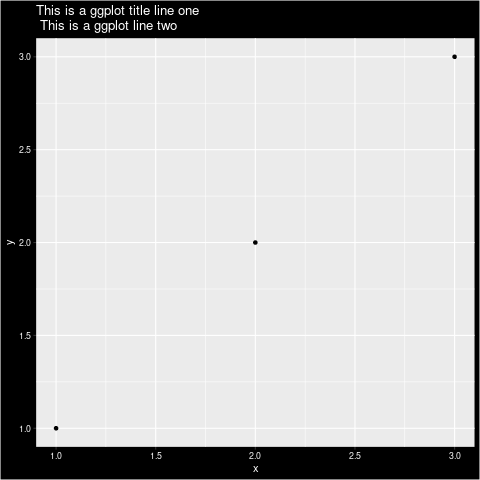
Make an elegant theme that uses “linen” as the background colour and a serif font for the text.
Needs info from 18.3, particularly
element_rect(),base + theme(panel.background = element_rect(fill = "linen"))Looks like I am going to need
element_text(family="serif")The following seems to work for an ad hoc solution. To get a more permanent solution, I would want to define a
theme_elegant().df <- data.frame(x = 1:3, y = 1:3) base <- ggplot(df, aes(x, y)) + geom_point() base_t <- base + labs(title = "This is a ggplot title line one\nThis is a ggplot line two") + theme(panel.background = element_rect(fill = "linen"), text=element_text(family="serif")) base_t
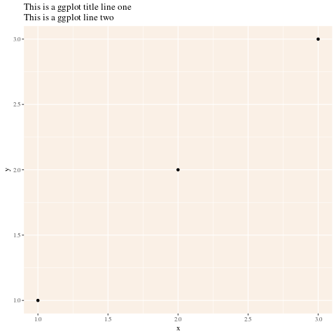
Systematically explore the effects of
hjustwhen you have a multiline title. Why doesn’tvjustdo anything?First, default is left justified.
df <- data.frame(x = 1:3, y = 1:3) base <- ggplot(df, aes(x, y)) + geom_point() base_t <- base + labs(title = "This is a ggplot title line one\nThis is a ggplot line two") + xlab(NULL) + ylab(NULL) base_t
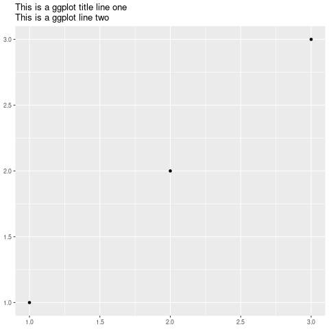
Second, with
hjust = 1, title is right-justified.df <- data.frame(x = 1:3, y = 1:3) base <- ggplot(df, aes(x, y)) + geom_point() base_t <- base + labs(title = "This is a ggplot title line one\nThis is a ggplot line two") + xlab(NULL) + ylab(NULL) base_t + theme(plot.title = element_text(hjust = 1))
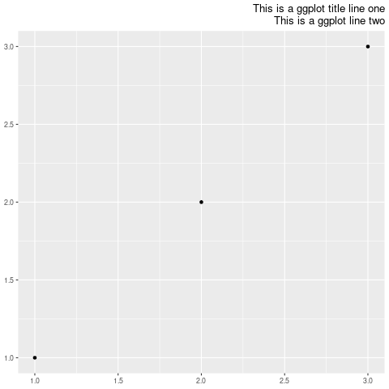
Third with
hjust = 0.5, title is centereddf <- data.frame(x = 1:3, y = 1:3) base <- ggplot(df, aes(x, y)) + geom_point() base_t <- base + labs(title = "This is a ggplot title line one\nThis is a ggplot line two")+ xlab(NULL) + ylab(NULL) base_t + theme(plot.title = element_text(hjust = 0.5))
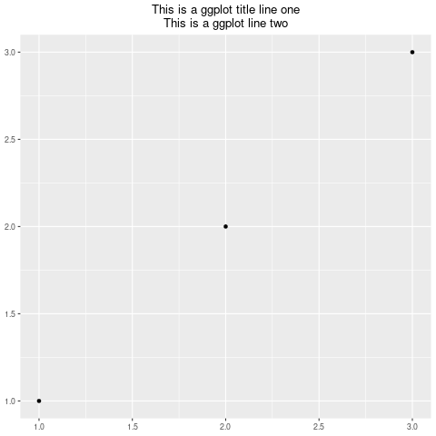